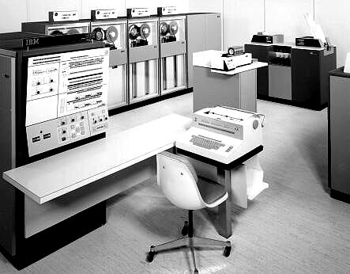

A Számítógép
Mi is az a számítógép?
Számítógép tágabb értelemben minden olyan berendezés, amely képes bemenő adatok (input) fogadására, ezeken különféle, előre beprogramozott műveletek programvégrehajtására, továbbá az eredményül kapott adatok kijelzésére, kivitelére (output), amelyek vagy közvetlenül értelmezhetőek a felhasználók részére vagy más berendezések vezérlésére használhatóak.
Az elektronikus eszközök, a számítógép generációk
Első generáció:
1940-es évektől, az első elektronikus számítógép megalkotásától számítjuk az 1. generáció szakaszát. Az első elektronikus digitális számítógép, az ENIAC még nem a Neumann-elvek alapján készült. Az első már Neumann elvei alapján készült számítógép az EDVAC nevet kapta. Működésük nagy elektroncsöveken alapul, teremméretűek voltak, az ENIAC 18 ezer elektroncsövet tartalmazott és 30 tonna volt. Energiafelhasználás nagyon magas (100 kW). Rendkívül költségesek és gyakori volt a meghibásodásuk. Műveleti sebességük alacsony volt, néhány ezer művelet másodpercen ként. Elterjednek a nyomtatott áramkörök. Az adatokat mágnesdobon tárolták, az adatbevitelre lyuk kártya szolgált. Üzemeltetésükhöz, működtetésükhöz mérnöki ismeretekre volt szükség. Alan Turing 1943-ban megalkotta az első Turing-gép elven működő gépezetét, amely a német ENIGMA titko sító készülék feltörését tette lehetővé. Becslések szerint Turing munkája 2 évvel rövidítette le a második világ háborút. Ezenkívül Turing nevéhez fűződik a Turing-teszt is, ami még ma is a számítógép intelligens mivoltának megállapításának mércéje.
Második generáció:
A félvezetők alkalmazása és a tranzisztor feltalálása tette lehetővé a második generációs számítógépek kifej lesztését az 50-es években. Elektroncsöveket felváltották a jóval kisebb méretű és energiaigényű tranzisztorok. Helyigényük szekrényméretűre csökkent. Üzembiztosságuk, tárolókapacitásuk és műveleti sebességük is je lentősen nőtt. Megjelenik a párhuzamos feldogozás-technika. Kialakultak a programozási nyelvek. Megjelenik a mágnesszalag, mint adatbeviteli eszköz és a ferritgyűrűs memória.
Harmadik generáció:
A tranzisztorokat egy lapra tömörítették, így a 60-as években megszületett az integrált áramkör. Ezáltal sökkent az alkatrészek mérete és száma, így a gépek mérete is asztalméretűre csökkent. Megje lentek az operációs rendszerek. A programnyelvek használata általánossá vált, sőt megjelentek a magas szintű programnyelvek is. Műveleti sebességük is rohamosan növekedett. Egyre elterjedtebbé váltak, megindult a sorozatgyártásuk, áruk csökkent. Megjelenik a mágneslemez.
Negyedik generáció:
A 70-es évek elején megszületett a mikrochip és a mikroprocesszor. A negyedik generáció azóta tart. A számítógépek asztali és hordozható változatban (laptop, note book, netbook, tablet, okostelefon) is kaphatóak. A fejlődő hordozható gépek kezdik kiszorítani a piacról az asztali gépeket. Hatalmas mennyiségű adatot képesek tárolni, és gyorsan feldolgozni. Bárki megveheti az alacsony áruk miatt. Otthoni és munkahelyi használatra is tökéletesek. Megjelentek a negyedik generációs programnyelvek (pl. PASCAL, C++, C#, Java), a grafikus ope rációs rendszerek és az internet.
Ötödik generáció:
Az ötödik generációs számítógépek fejlesztése jelenleg is folyik. Az ötödik generációs számítógépek létrehozásának kísérletei a nyolcvanas évek elején kezdődtek meg Japánban. Megjelenik a felhasználóorientált kommunikáció és az AI (mesterséges intelligencia). Moore törvénye azt állítja, hogy az adott áron kapható számítási kapacitás 2 évente megduplázódik. A törvény alapján 2029-re a processzorok elérik az emberi agy számítási sebességét. Az biztosan tudjuk, hogy a fejlődés exponenciálisan nő. A mai világban már léteznek önműködő autók, a mesterséges intelligencia is folyamatosan fejlődik, egyre jobb teljesítményű gépeket lehet kapni.
| Első generáció | Második generáció | Harmadik generáció | Negyedik generáció | Ötödik generáció | |
|---|---|---|---|---|---|
| aktív áramkör | elektroncső | transzisztorok | intergrált áramkörök | integrált áramkörök | |
| sebesség | 300 szorzás/s | 200 ezer szorzás/s | 2 millió szorzás/s | 20 millió szorzás/s | |
| operatív tár | mágnesdob | ferritgyűrű | ferritgyűrű | félvezető | |
| háttértár | mágnesszalag,mágnesdob | mágnesszalag,mágneslemez | mágneslemez,mágnesszalag | mágneslemez,hajlékonylemez | |
| adatbevitel | lyukszalag,lyukkártya | lyukkártya,mágnesszalag | billentyűzetről mágneslemezre,mágnesszalagra | egér,szkenner,optikai karakterfelismerés | |
| adatkivitel | lyukkártya,nyomtatott lista | lyukkártya,nyomtatott lista | nyomtatott lista,képernyő | képernyő,hangszoró,nyomtatott lista | |
| jellemzők | fixpontos aritmetika | lebegőpontos aritmetika, I/O processzor,indexregiszter | Pipeline,cache memória | mikroszámítógép | mesterséges intelligencia |
| méret | szoba | szekrény | asztal | írógép méret | |
| szoftver | gépi kód,felhasználó által írt programok | assembly nyelv, magas szintű nyelvek,kész programkönyvtárak,batch monitor | operációs rendszer, újabb magas szintű nyelvek,kész alkalmazások | adatbázis kezelők,negyedik generációs nyelvek,programcsomagok,szövegszerkesztés | |
| egyéb | az operátor kapcsolók beállításával vezérli a gépet,kötegelt feldolgozás | az operátor a lyukkártyákat adagolja, megjelenik a valós idejű feldolgozás és a távadatátvitel | időosztás,multiprogramozás,virtuális memória,miniszámítógép,számítógép család | virtuális memória,osztott feldolgozás,személyi számítógép | Az ötödik generációs számítógépek fejlesztése jelenleg is folyik |